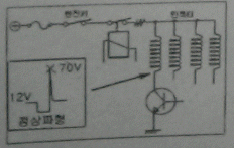
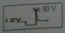
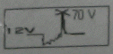
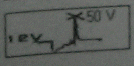
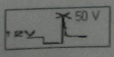

자동차정비기능사 (2013-10-12 기출문제)
1과목: 자동차공학
1. 기동 전동기가 정상 회전하지만 엔진이 시동 되지 않는 원인과 관련이 있는 사항은?
- 밸브 타이밍이 맞지 않을 때
- 조향 핸들 유격이 맞지 않을 때
- 현가장치에 문제가 있을 때
- 산소 센서의 작동이 불량일 때
(정답률: 78%)

2. 캠축과 크랭크축의 타이밍 전동 방식이 아닌 것은?
- 유압 전동 방식
- 기어 전동 방식
- 벨트 전동 방식
- 체인 전동 방식
(정답률: 80%)
3. 실린더 벽이 마멸되었을 때 나타나는 현상 중 틀린 것은?
- 엔진오일의 희석 및 소모
- 피스톤 슬랩 현상 발생
- 압축압력 저하 및 블로바이 가스 발생
- 연료소모 저하 및 엔진 출력저하
(정답률: 59%)
4. 피스톤 평균속도를 높이지 않고 엔진 회전속도를 높이려면?
- 행정을 작게 한다.
- 행정을 크게 한다.
- 실린더 지름을 크게 한다.
- 실린더 지름을 작게 한다.
(정답률: 62%)
5. PCV(positive crankcase ventilation)에 대한 설명으로 옳은 것은?
- 블로바이(blow by) 가스를 대기 중으로 방출하는 시스템이다.
- 고부하 때에는 블로바이 가스가 공기 청정기에서 헤드커버 내로 공기가 도입됩니다.
- 흡기 다기관이 부압일 때는 크랭크케이스에서 헤드커버를 통해 공기 청정기로 유입된다.
- 헤드커버 안의 블로바이 가스는 부하와 관계없이 서지탱크로 흡입되어 연소된다.
(정답률: 49%)
6. 전자제어 차량의 인젝터가 갖추어야 될 기본 요건이 아닌 것은?
- 정확한 분사량
- 내 부식성
- 기밀 유지
- 저항 값은 무한대(∞)일 것
(정답률: 86%)
7. 화물자동차 및 특수자동차의 차량 총중량은 몇 톤을 초과해서는 안되는가?
- 20톤
- 30톤
- 40톤
- 50톤
(정답률: 84%)
8. 과급기가 설치된 엔진에 장착된 센서로서 급속 및 증속에서 ECU로 신호를 보내주는 센서는?
- 부스터 센서
- 노크 센서
- 산소 센서
- 수온 센서
(정답률: 69%)
9. 다음 중 기관 과열의 원인이 아닌 것은?
- 수온조절기 불량
- 냉각수 량 과다
- 라디에이터 캡 불량
- 냉각팬 모터 고장
(정답률: 84%)
10. 디젤기관에서 연료 분사펌프의 거버너는 어떤 작용을 하는가?
- 분사압력을 조정한다.
- 분사시기를 조정한다.
- 착화시기를 조정한다.
- 분사량을 조정한다.
(정답률: 57%)
11. 윤활유의 성질에서 요구되는 사항이 아닌 것은?
- 비중이 적당할 것
- 인화점 및 발화점이 낮을 것
- 점성과 온도와의 관계가 양호할 것
- 카본의 생성이 적으며, 강인한 유막을 형성할 것
(정답률: 89%)
12. 다음 중 EGR(Exhaust Gas Recurculation) 밸브의 구성 및 기능 설명으로 틀린 것은?
- 배기가스 재순환 장치
- EGR파이프, EGR밸브 및 서모밸브로 구성
- 질소화합물(NOx) 발생을 감소시키는 장치
- 연료 증발가스(HC) 발생을 억제 시키는 장치
(정답률: 77%)
13. 실린더와 피스톤 사이의 틈새로 가스가 누출되어 크랭크실로 유입된 가스를 연소실로 유도하여 재연소 시키는 배출가스 정화 장치는?
- 촉매 변환기
- 배기가스 재순환 장치
- 연료 증발 가스 배출 억제 장치
- 블로바이 가스 환원 장치
(정답률: 68%)
14. LPG의 특징 중 틀린 것은?
- 액체 상태의 비중은 0.5 이다.
- 기체상태의 비중은 1.5 ~ 2.0 이다.
- 무색 무취이다.
- 공기보다 가볍다.
(정답률: 80%)
15. 디젤 노크와 관련이 없는 것은?
- 연료 분사량
- 연료 분사시기
- 흡기 온도
- 엔진오일 량
(정답률: 80%)
16. 분사펌프에서 딜리버리 밸브의 작용 중 틀린 것은?
- 노즐에서의 후적 방치
- 연료의 역류 방지
- 연료 라인의 잔압유지
- 분사시기 조정
(정답률: 57%)
17. 흡기관 내 압력의 변화를 측정하는 흡입공기량을 간접으로 검축하는 방식은?
- K - jetronic
- D - jetronic
- L - jetronic
- LH - jetronic
(정답률: 62%)
18. 어떤 물체가 초속도 10m/s로 마루면을 미끄러진다면 몇 m를 진행하고 멈추는가?(단, 물체와 마루면 사이의 마찰계수는 0.5 이다.)
- 0.51m
- 5.1m
- 10.2m
- 20.4m
(정답률: 51%)
19. 탄소 1kg을 완전 연소시키기 위한 순수 산소의 양은?
- 약 1.67kg
- 약 2.67kg
- 약 2.89kg
- 약 5.56kg
(정답률: 62%)
20. 제동마력(BHP)을 지시마력(IHP)으로 나눈 값은?
- 기계효율
- 열효율
- 체적효율
- 전달효율
(정답률: 63%)
2과목: 자동차정비 및 안전기준
21. 인젝터 회로의 정상적인 파형이 그림과 같을 때 본선의 접속불량시 나올 수 있는 파형 중 맞는 것은?





(정답률: 53%)
22. 자동차가 24km/h의 속도에서 가속하여 60km/h의 속도를 내는데 5초 걸렸다. 평균 가속도는?
- 10m/s2
- 5m/s2
- 2m/s2
- 1.5m/s2
(정답률: 43%)
23. 규정값이 내경 78㎜인 실린더를 실린더 보어 게이지로 측정한 결과 0.35㎜가 마모되었다. 실린더 내경을 얼마로 수정해야 하는가?
- 실린더 내경을 78.35㎜로 수정한다.
- 실린더 내경을 78.50㎜로 수정한다.
- 실린더 내경을 78.75㎜로 수정한다.
- 실린더 내경을 79.00㎜로 수정한다.
(정답률: 58%)
24. 브레이크 장치에서 슈리턴스프링의 작용에 해당되지 않는 것은?
- 오일이 휠실린더에서 마스터 실린더로 되돌아가게 한다.
- 슈와 드럼간의 간극을 유지해 준다.
- 페달력을 보강해 준다.
- 슈의 위치를 확보한다.
(정답률: 55%)
25. 기관 rpm이 3570이고 변속비가 3.5, 종감속비가 3일 때, 오른쪽 바퀴가 420rpm 이면 왼쪽바퀴 회전수는?
- 340 rpm
- 1480 rpm
- 2.7 rpm
- 260 rpm
(정답률: 40%)
26. 자동차의 전자제어 제동장치(ABS) 특징으로 올바른 것은?
- 바퀴가 로크 되는 것을 방지하여 조향 안정성 유지
- 스핀 현상을 발생시켜 안정성 유지
- 제동시 한쪽 쏠림 현상을 발생시켜 안정성 유지
- 제동거리를 증가시켜 안정성 유지
(정답률: 71%)
27. 자동차 앞 차륜 독립현가장치에 속하지 않는 것은?
- 트레일링 암 형식(trailling arm type)
- 워시본형식(wishbone type)
- 맥퍼슨 형식(macpherson type)
- SLA 형식(Short long arm type)
(정답률: 56%)
28. 전차륜 정렬에 관계되는 요소가 아닌 것은?
- 타이어의 이상마모를 방지한다.
- 정지상태에서 조향력을 가볍게 한다.
- 조향핸들의 복원성을 준다.
- 조향방향의 안정성을 준다.
(정답률: 60%)
29. 공기 브레이크 장치에서 앞바퀴로 압축공기가 공급되는 순서는?
- 공기탱크 - 퀵 릴리스밸브 - 브레이크밸브 - 브레이크 챔버
- 공기탱크 - 브레이크 챔버 - 브레이크 밸브 - 브레이크 슈
- 공기탱크 - 브레이크 밸브 - 퀵 릴리스밸브 - 브레이크 챔버
- 브레이크밸브 - 공기탱크 - 퀵 릴리스밸브 - 브레이크 챔버
(정답률: 51%)
30. 전동식 전자제어 동력조향장치에서 토크센서의 역할은?
- 차속에 따라 최적의 조향력을 실현하기 위한 기준 신호로 사용된다.
- 조향휠을 돌릴때 조향력을 연산할 수 있도록 기본 신호를 컨트롤 유닛에 보낸다.
- 모터 작동시 발생되는 부하를 보상하기 위한 보상 신호로 사용된다.
- 모터내의 로터 위치를 검출하여 모터 출력의 위상을 결정하기 위해 사용된다.
(정답률: 52%)
31. 앞차축 현가장치에서 맥퍼슨형의 특징이 아닌 것은?
- 위시본형에 비하여 구조가 간단하다.
- 로드 홀딩이 좋다.
- 엔진 룸의 유효공간을 넓게 할 수 있다.
- 스프링 아래 중량을 크게 할 수 있다.
(정답률: 60%)
32. 토크컨버터의 토크 변환율은?
- 0.1 ~ 1배
- 2 ~ 3배
- 4 ~ 5배
- 6 ~ 7배
(정답률: 76%)
33. 동력조향장치 정비 시 안전 및 유의 사항으로 틀린 것은?
- 자동차 하부에서 작업할 때는 시야확보를 위해 보안경을 벗는다.
- 공간이 좁으므로 다치지 않게 주의한다.
- 제작사의 정비 지침서를 참고하여 점검 정비 한다.
- 각동 볼트 너트는 규정 토크로 조인다.
(정답률: 89%)
34. 드럼식 브레이크에서 브레이크슈의 작동형식에 의한 분류에 해당하지 않는 것은?
- 리딩 트레일링 슈 형식
- 3리딩 슈 형식
- 서보 형식
- 듀오 서보식
(정답률: 59%)
35. 마스터 실린더 푸시로드에 작동하는 힘이 120 kgf 이고, 피스톤 단면적이 3 cm2 일 때 발생 유압은?
- 30 kgf/cm2
- 40kgf/cm2
- 50kgf/cm2
- 60kgf/cm2
(정답률: 84%)
36. 자동변속기에서 유성기어 캐리어를 한 방향으로만 회전하게 하는 것은?
- 원웨이 클러치
- 프론트 클러치
- 리어 클러치
- 엔드 클러치
(정답률: 78%)
37. 추진축 스플라인 부의 마모가 심할 때 현상으로 가장 적절한 것은?
- 차동기의 드라이브 피니언과 링기어 치합이 불량하게 된다.
- 차동기의 드라이브 피니언 베어링의 조임이 헐겁게 된다.
- 동력을 전달할 때 충격 흡수가 잘 된다.
- 주행 중 소음을 내고 추진축이 진동한다.
(정답률: 72%)
38. 변속기의 변속비(기어비)를 구하는 식은?
- 엔진의 회전수를 추진축의 회전수로 나눈다.
- 부축의 회전수를 엔진의 회전수로 나눈다.
- 입력축의 회전수를 변속단 카운터축의 회전수로 곱한다.
- 카운터 기어 잇수를 변속단 카운터 기어 잇수로 곱한다.
(정답률: 61%)
39. 클러치 디스크의 런아웃이 클 때 나타날 수 있는 현상으로 가장 적합한 것은?
- 클러치의 단속이 불량해진다.
- 클러치 페달의 유격에 변화가 생긴다.
- 주행 중 소리가 난다.
- 클러치 스프링이 파손된다.
(정답률: 46%)
40. 전자제어 동력 조향장치의 특성으로 틀린 것은?
- 공전과 저속에서 핸들 조작력이 작다.
- 중속 이상에서는 차량속도에 감응하여 샌들 조작력을 변화시킨다.
- 차량속도가 고속이 될수록 큰 조작력을 필요로 한다.
- 동력 조향장치이므로 조향기어는 필요 없다.
(정답률: 66%)
3과목: 안전관리
41. 20℃에서 양호한 상태인 100Ah의 축전지는 200 A의 전기를 얼마 동안 발생시킬 수 있는가?
- 1시간
- 2시간
- 20분
- 30분
(정답률: 52%)
42. 파워 윈도우 타이머 제어에 관한 설명으로 틀린 것은?
- IG 'ON' 에서 파워윈도우 릴레이를 ON 한다.
- IG 'OFF' 에서 파워윈도우 릴레이를 일시정지 동안 ON 한다.
- 키를 뺐을 때 윈도우가 열려 있다면 다시 키를 꽂지 않아도 일정시간 이내 윈도우를 닫을 수 있는 기능이다.
- 파워 윈도우 타이머 제어 중 전조등을 작동시키면 출력을 즉시 OFF 한다.
(정답률: 63%)
43. 자동차의 종합경보장치에 포함되지 않는 제어 기능은?
- 도어록 제어 기능
- 감광식 룸램프 제어기능
- 엔진 고장지시 제어기능
- 도어 열림 경고 제어기능
(정답률: 55%)
44. 다음 중 옴의 법칙을 바르게 표시한 것은?(단, E : 전압, I : 전류, R : 저항)
- R = IE
- R = I/E
- R = I/E2
- R = E/I
(정답률: 56%)
45. 축전지를 급속 충전할 때 주의 사항이 아닌 것은?
- 통풍이 잘 되는 곳에서 충전한다.
- 축전지의 +, - 케이블을 자동차에 연결한 상태로 충전한다.
- 전해액의 온도가 45℃가 넘지 않도록 한다.
- 충전 중인 축전지에 충격을 가하지 않도록 한다.
(정답률: 84%)
46. 점화플러그에 불꽃이 튀지 않는 이유 중 틀린 것은?
- 파워 TR 불량
- 점화코일 불량
- TPS 불량
- ECU 불량
(정답률: 56%)
47. 와이퍼 모터 제어와 관련된 입력 요소들을 나열한 것으로 틀린 것은?
- 와이퍼 INT 스위치
- 와셔 스위치
- 와이퍼 HI 스위치
- 전조등 HI 스위치
(정답률: 73%)
48. 논리회로에서 OR + NOT에 대한 출력의 진리값으로 틀린 것은?(단, 입력 : A, B 출력 : C)
- 입력 A가 0 이고, 입력 B가 1 이면 출력 C는 0 이 된다.
- 입력 A가 0 이고, 입력 B가 0 이면 출력 C는 0 이 된다.
- 입력 A가 1 이고, 입력 B가 1 이면 출력 C는 0 이 된다.
- 입력 A가 1 이고, 입력 B가 0 이면 출력 C는 0 이 된다.
(정답률: 54%)
49. 모터(기동전동기)의 형식을 맞게 나열한 것은?
- 직렬형, 병렬형, 복합형
- 직렬형, 복렬형, 병렬형
- 직권형, 복권형, 복합형
- 직권형, 분권형, 복권형
(정답률: 58%)
50. 계기판의 충전 경고등은 어느 때 점등 되는가?
- 배터리 전압이 10.5V 이하 일 때
- 알터네이터에서 충전이 안 될 때
- 알터네이터에서 충전되는 전압이 높을 때
- 배터리 전압이 14.7V 이상일 때
(정답률: 58%)
51. 작업장의 환경을 개선하면 나타나는 현상으로 틀린 것은?
- 좋은 품질의 생산품을 얻을 수 있다.
- 피로를 경감시킬 수 있다.
- 작업 능률을 향상시킬 수 있다.
- 기계소모가 많고 동력손실이 크다.
(정답률: 85%)
52. 스패너 작업시 유의할 점이다. 틀린 것은?
- 스패너의 입이 너트의 치수에 맞는 것을 사용해야 한다.
- 스패너의 자루에 파이프를 이어서 사용해서는 안된다.
- 스패너의 너트 사이에는 쐐기를 넣고 사용하느 것이 편리하다.
- 너트에 스패너를 깊이 물리고 조금씩 앞으로 당기는 식으로 풀고 조인다.
(정답률: 82%)
53. 큰 구멍을 가공할 때 가장 먼저 하여야 할 작업은?
- 스핀들의 속도를 증가시킨다.
- 금속을 연하게 한다.
- 강한 힘으로 작업한다.
- 작은 치수의 구멍으로 먼저 작업한다.
(정답률: 88%)
54. 연소의 3요소에 해당 되지 않는 것은?
- 물
- 공기(산소)
- 점화원
- 가연물
(정답률: 76%)
55. 드릴링 머신 작업을 할 때 주의사항으로 틀린 것은?
- 드릴의 날이 무디어 이상한 소리가 날 때는 회전을 멈추고 드릴를 교환하거나 연마한다.
- 공작물을 제거할 때는 회전을 완전히 멈추고 한다.
- 가공 중에 드릴이 관통했는지를 손으로 확인한 후 기계를 멈춘다.
- 드릴은 주축에 튼튼하게 장치하여 사용한다.
(정답률: 84%)
56. 자동차 타이어 공기압에 대한 설명으로 적합한 것은?
- 비오는날 빗길 주행시 공기압을 15%정도 낮춘다.
- 좌, 우 바퀴의 공기압이 차이가 날 경우 제동력 편차가 발생할 수 있다.
- 모래길 등 자동차 바퀴가 빠질 우려가 있을 때는 공기압을 15%정도 높인다.
- 공기압이 높으면 트레드 양단이 마모된다.
(정답률: 63%)
57. 자동차 소모품에 대한 설명이 잘못된 것은?
- 부동액은 차체의 도색 부분을 손상시킬 수 있다.
- 전해액은 차체를 부식시킨다.
- 냉각수는 경수를 사용하는 것이 좋다.
- 자동변속기 오일은 제작회사의 추천 오일을 사용한다.
(정답률: 72%)
58. 사이드슬립 시험기 사용시 주의할 사항 중 틀린 것은?
- 시험기의 운동부분은 항상 청결하여야 한다.
- 시험기의 답판 및 타이어에 부착된 수분, 기름, 흙 등을 제거한다.
- 시험기에 대하여 직각방향으로 진입시킨다.
- 답판 위에서 차속이 빠르면 브레이크를 사용하여 차속을 맞춘다.
(정답률: 66%)
59. 변속기를 탈착할 때 가장 안전하지 않은 작업 방법은?
- 자동차 밑에서 작업 시 보안경을 착용한다.
- 잭으로 올릴 때 물체를 흔들어 중심을 확인한다.
- 잭으로 올린 후 스탠드로 고정한다.
- 사용 목적에 적합한 공구를 사용한다.
(정답률: 85%)
60. 축전지의 점검시 육안점검 사항이 아닌 것은?
- 케이스 외부 전해액 누출상태
- 전해액의 비중측정
- 케이스의 균열점검
- 단자의 부식상태
(정답률: 80%)